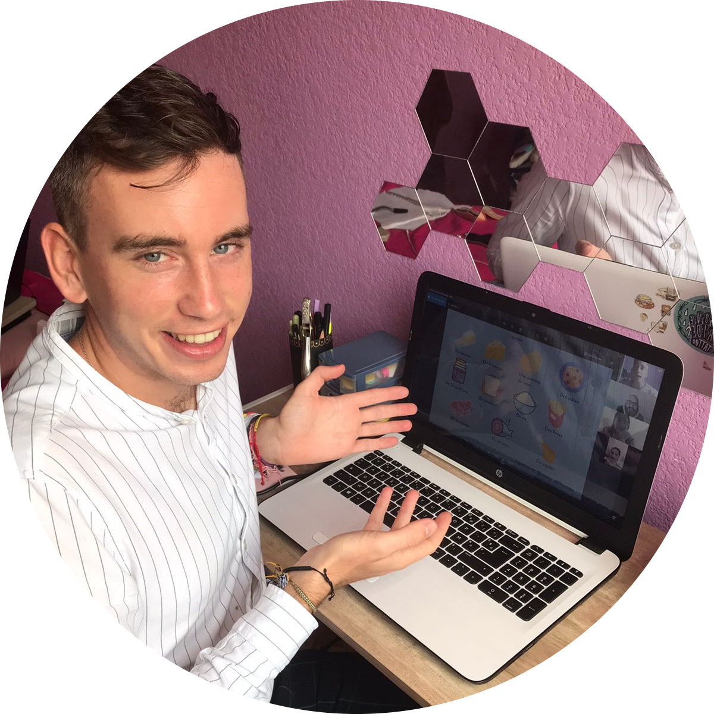

En Un peu de Français, aprenderás algo más que lo de una simple clase de francés. Con nuestro contenido cultural, moderno y cualitativo, te acompañaremos en tu progresión y te brindaremos tips para ampliar tu aprendizaje. ¡Vas a ver que sí es posible pasar un buen momento en clase!.
Tristan es originario de una provincia llamada Bretaña; lluviosa y rodeada de agua. Su provincia ha sido independiente durante mucho tiempo antes de unirse a Francia. Se dice que las crepas nacieron ahí. A Tristan desde siempre le encanta hablar e intercambiar con los demás. Entonces estudió el marketing y la comunicación en Francia para después terminar su licencia en España. Una vez ahí se dió cuenta de algo : aprender un nuevo idioma no es fácil y la calidad de tu aprendizaje está muy vinculada con la calidad de tu profesor. Por suerte tuvo un profesor increíble que le ayudó mucho a manejar el castellano y sobre todo le dieron ganas de él mismo ser profesor.
En España, también conoció a una increíble mexicana que no tardó en convertirse en su novia; y eso fue suficiente para que tuviera ganas de descubrir México.
Entonces llegó al país de los aztecas en 2019. Ya en México, empezó una formación en la embajada de Francia para dar clases y se fue a Guadalajara para trabajar como profesor durante 1 año. ¡Le encantó el trabajo de profesor! No se cansaba de enseñar y le aportaba tal satisfacción que supo que iba a hacer eso toda su vida; era un verdadero coach, le encantaba interactuar con sus alumnos, motivarlos y enseñarles su idioma.
Después de su experiencia, decidió empezar a dar clases por su propia cuenta. La idea era incluir mucha cultura, pronunciación e interacción en sus clases a través de textos y audios; y romper los (numerosos) clichés del idioma francés.
No, no hay que resumir este idioma a la boina, a la baguette y a un güerito con ojos azules. El verdadero francés es mucho más complejo que esto y se esconde detrás de sus clichés; y cada alumno debe tener una visión moderna y real del idioma.
Tristan aprovechó la pandemia y el encierro para trabajar sobre su método de enseñanza, con el apoyo de su novia, y por fin Un peu de Français salió a la luz en febrero de 2021. Otros profesores no tardaron en unirse también a la escuela y la aventura ya había empezado.
Un lema empezó a diseñarse : En Un peu de français no serás bilingüe en 3 meses, pero entenderás todo, pasarás un buen momento y aprenderás un poco más que lo de una simple clase de francés.
Ense√±ar ‚Äì Hablar de cultura ‚Äì Sonre√≠r ‚Äì Conocer a nuestros alumnos ‚Äì Romper los clich√©s - Dar tips y contar an√©cdotas ‚Äì Hacer que los alumnos aprendan mientras pasan un buen momento - Ampliar la visi√≥n del idioma franc√©s - Compartir nuestra receta de crepas (bueno, eso lo pensaremos‚Ķ üôÇ).